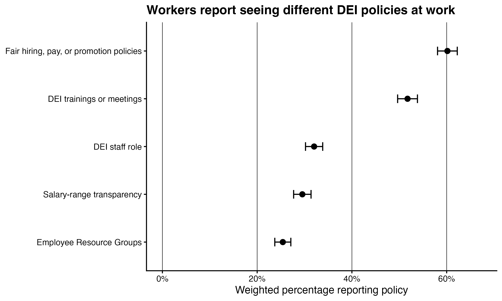
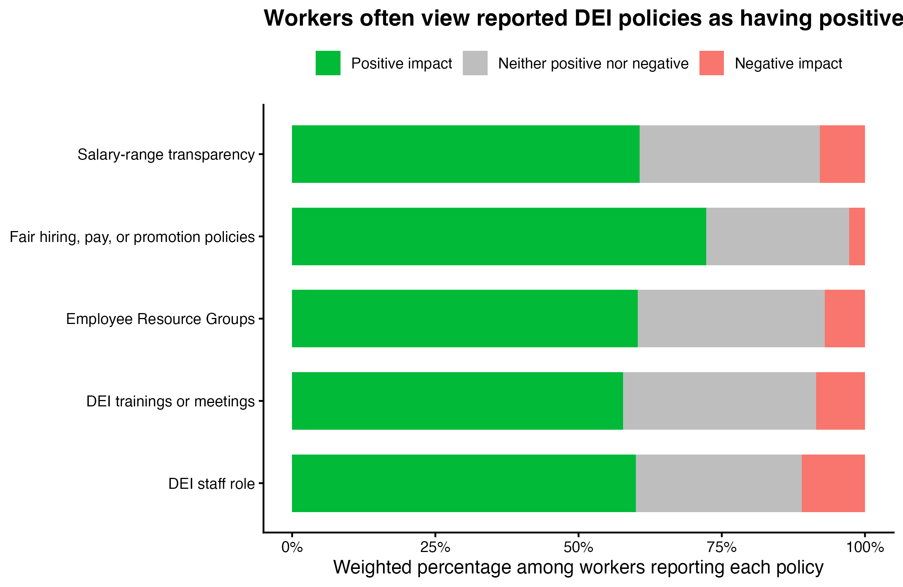
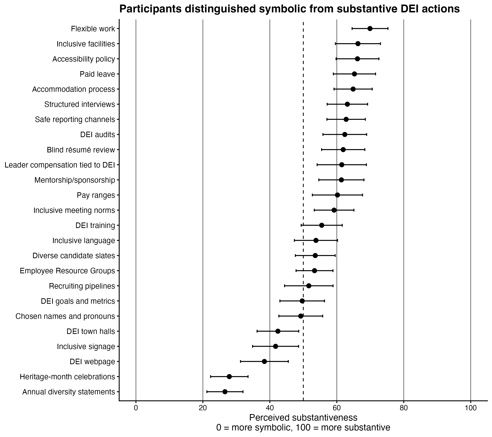
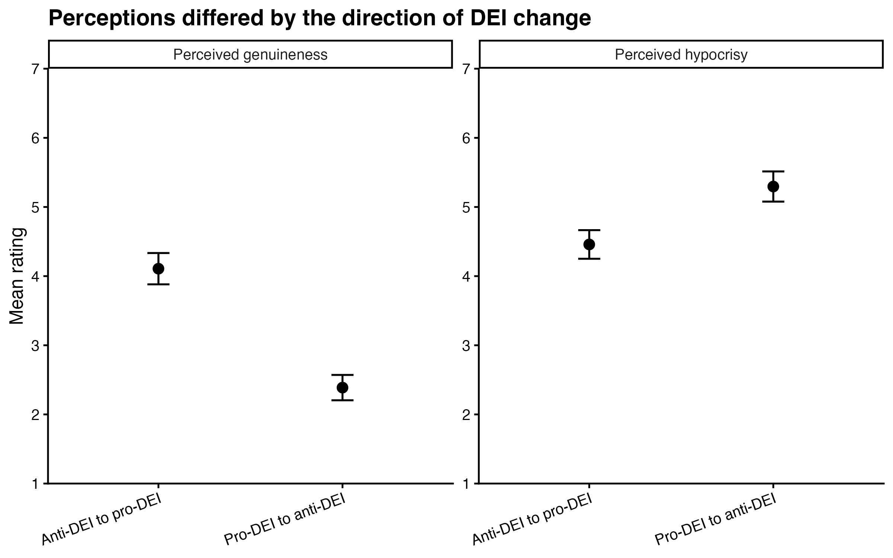
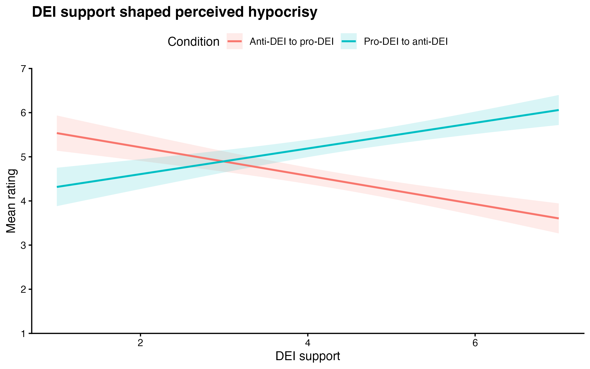
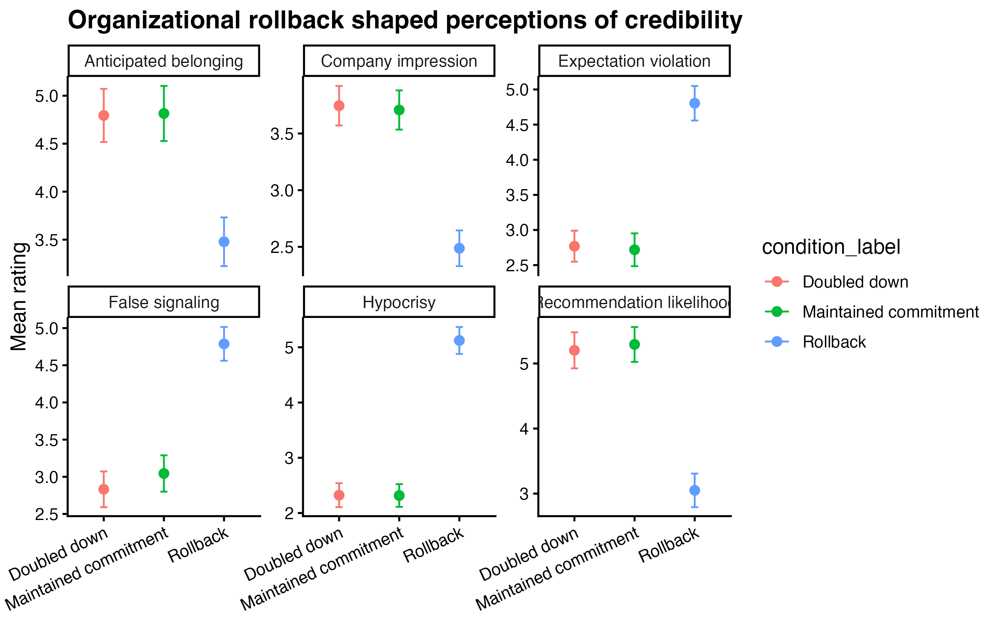

The problem
Organizations increasingly make public commitments to diversity, equity, and inclusion. But those commitments do not exist in a vacuum: employees, applicants, and observers use them to infer what the organization values, whether it is sincere, and whether it is likely to follow through.
This project examines DEI action as a credibility signal. Across public survey data and three experimental studies, I ask how people distinguish symbolic from substantive DEI action, how they judge organizations that change direction, and how perceptions shift when an organization rolls back, maintains, or strengthens a prior commitment.
Executive summary
DEI policies are visible workplace signals
In public Pew data, workers reported whether their organizations had DEI staff roles, DEI trainings, fair hiring/pay/promotion policies, ERGs, and salary-range transparency — showing that these policies are concrete workplace features people notice and evaluate.
People distinguish symbolic from substantive action
Participants rated 25 DEI actions on a symbolic-to-substantive scale, producing a ranked map of which policies appeared more like value signaling and which appeared more resource-backed or structural.
DEI changes are interpreted through credibility
In the direction-of-change study, moving from a pro-DEI stance to an anti-DEI stance was judged differently than moving from anti-DEI to pro-DEI, with responses shaped by participants’ own DEI support and political orientation.
Backtracking carried reputational costs
In the commitment update study, the rollback condition was perceived as most hypocritical and least credible relative to maintaining or deepening the original commitment.
Study roadmap
The evidence is organized as a progression: first, a public-data context section establishes that workers encounter and evaluate DEI policies in real organizations. The experimental studies then test how people interpret different kinds of DEI action and different kinds of organizational change.
Context
DEI policies at work
How common are workplace DEI policies, and how do workers evaluate their impact?
Study 1
Symbolic or substantive?
Which DEI actions are perceived as concrete versus primarily symbolic?
Study 2
Changing direction
How do people judge companies that move toward or away from DEI?
Study 3
Rollback or follow through?
What happens when a company rolls back, maintains, or strengthens a prior DEI commitment?
Public survey context
DEI policies are real workplace signals
To ground the experimental studies in a broader workplace context, I analyzed Pew Research Center’s 2023 American Trends Panel Wave 121 data. The survey asked employed adults whether their workplace had specific DEI policies and, among workers who reported each policy, whether the policy had a positive, neutral, or negative impact where they work.

DEI policy prevalence. Workers reported whether their organizations had DEI staff roles, DEI trainings or meetings, fair hiring/pay/promotion policies, ERGs, and salary-range transparency.

Perceived impact of reported DEI policies. Among workers who reported each policy, the Pew survey asked whether the policy had a positive, neutral, or negative impact where they work.
Why this matters
The Pew data show that DEI policies are not only abstract public commitments. They are workplace practices employees report seeing and evaluating, which makes it important to understand how people interpret the meaning and credibility of those policies.
Study 1
What makes DEI action seem substantive?
Study 1 asked participants to evaluate a set of DEI policies on a 0–100 scale, where lower values indicated that the policy seemed more symbolic and higher values indicated that the policy seemed more substantive. This study establishes the first premise of the project: people do not treat all DEI actions as equivalent signals.

Perceived substantiveness of DEI actions. Participants distinguished between policies that primarily communicated organizational values and policies that involved more concrete resources, accountability, or structural change.
Finding
The ranked policy map suggests that DEI actions vary in how strongly they communicate follow-through. Policies involving structures, resources, or accountability tended to appear more substantive than policies focused primarily on messaging, visibility, or symbolic communication.
Study 2
How do people judge companies that change direction on DEI?
Study 2 tested whether people judge a company differently depending on the direction of its DEI change. Participants read about a company that either moved from a pro-DEI stance to an anti-DEI stance or from an anti-DEI stance to a pro-DEI stance. The main outcomes were perceived hypocrisy and genuineness, with DEI support and political orientation examined as moderators.

Direction of DEI change. The study compares reactions to a company moving away from DEI versus moving toward DEI.

Moderation by participant attitudes. Reactions to DEI change were interpreted through participants’ own DEI attitudes and political orientation.
Finding
Changing direction on DEI was not evaluated as a neutral consistency problem. Participants’ judgments depended on the direction of the change and on their own orientation toward DEI, suggesting that organizational credibility is filtered through people’s prior beliefs about DEI itself.
Study 3
What happens when organizations roll back a prior commitment?
Study 3 examined what happens after an organization first makes a DEI commitment and later provides an update. Participants saw one of three updates: the organization rolled back the commitment, maintained the original commitment, or doubled down by increasing the commitment.

Commitment updates. The rollback condition was compared with maintaining the original commitment and doubling down on the commitment.
Finding
The clearest reputational penalty emerged when the organization visibly retreated from its prior commitment. Maintaining or deepening the commitment appeared more similar to one another than either did to rollback, suggesting that the credibility risk is concentrated around backtracking.
What this means for organizations
Specific actions matter
DEI commitments are not interchangeable. People distinguish between actions that look primarily symbolic and actions that appear tied to resources, structures, or accountability.
Consistency matters
Once organizations make DEI commitments, later changes are evaluated against those initial promises. Backtracking can make the organization seem hypocritical or less genuine.
Audience matters
People’s reactions to DEI changes are shaped by their own attitudes and ideology, meaning the same organizational update can be interpreted very differently by different audiences.
Technical appendices
The public page summarizes the main narrative. The appendices include study materials, data checks, reliability tables, model output, post hoc comparisons, and figure-generation details.